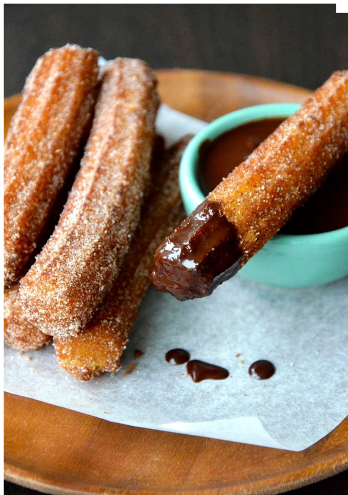
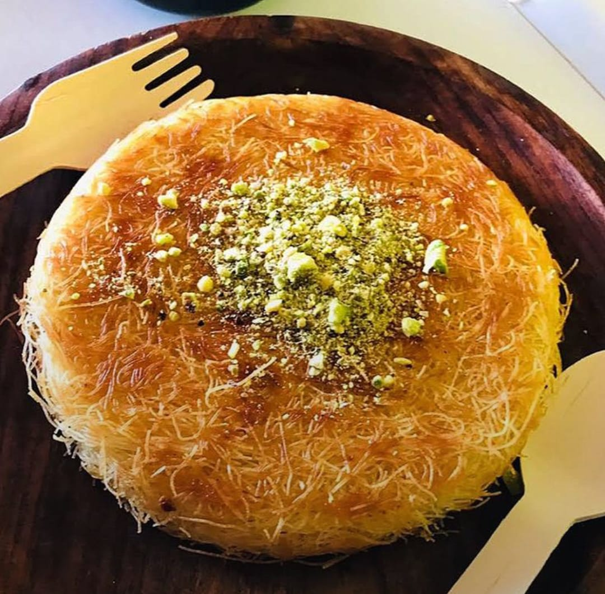
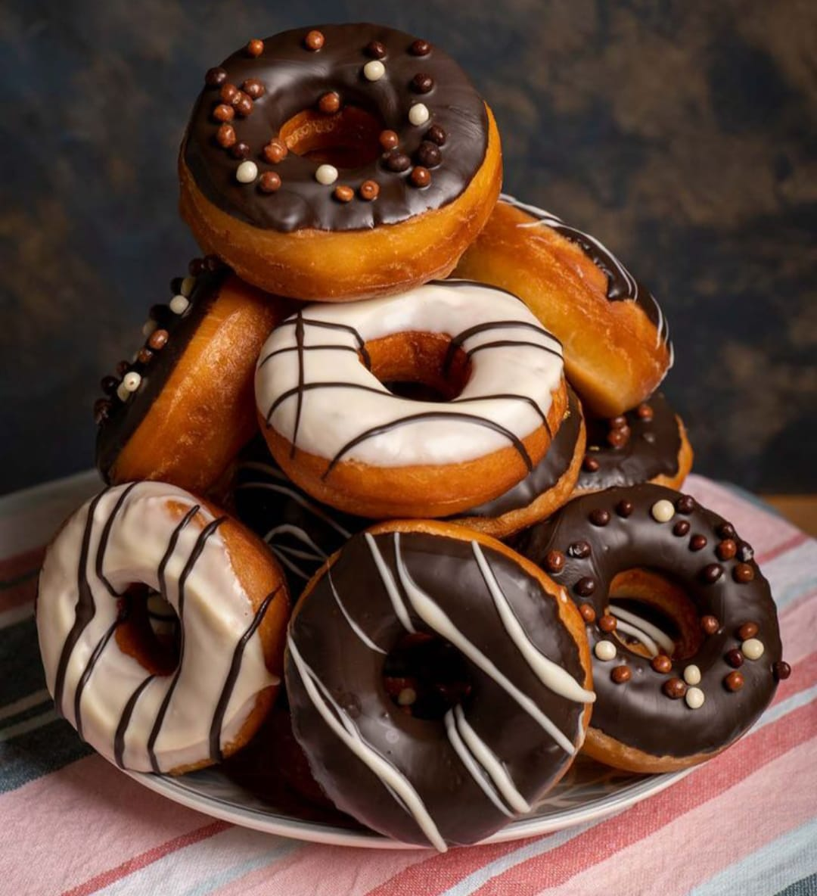
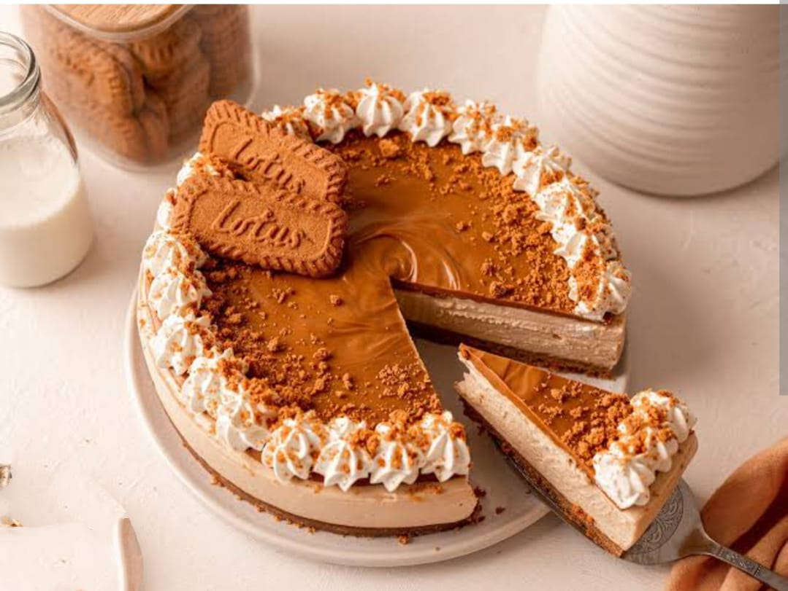

Eggless Churros

Ingredients
- 2 cups water
- 3 tbsp butter
- 2 tbsp sugar
- ⅛ tsp salt
- 2 cups flour
- Oil for frying
Instructions
- Add water in a pan along with butter, sugar, and salt.
- Once it comes to a boil, take it off the heat and add in the flour while mixing continuously.
- Cook it again for 2-3 minutes until the dough comes together and forms a film on the bottom of the pan.
- Transfer it to a piping bag with a large nozzle once cooled down and no steam is coming out.
- Pipe directly into the pan and fry for 3-4 minutes or until golden brown.
- Roll in the cinnamon sugar while the churros are still hot.
- Serve with a rich chocolate sauce and enjoy!
Kunafa

Ingredients
- 200 grams Kunafa Dough (strands)
- 200 grams Butter (Salted), melted
- 1/4 cup Pistachios, chopped
Filling
- 1 cup Milk
- 2 teaspoons Corn flour
- 1 teaspoon Rose water
- 1/2 cup Ricotta Cheese, grated
Sugar Syrup
- 1-1/2 cup Sugar
- 1 cup Water
- 1 teaspoon Lemon juice
- 1 teaspoon Rose water
Instructions
- Preheat the oven to 180°C (350°F).
- Prepare the sugar syrup by boiling sugar and water until it thickens and reaches a two-string consistency. Remove from heat and add lemon juice and rose water. Set aside.
- For the filling, heat milk and whisk in the corn flour until it thickens. Add rose water and allow the custard to cool.
- Break the kunafa dough into strands and mix with melted butter. Press half of the mixture into the bottom of a greased baking pan.
- Spread the milk pudding over the dough, followed by shredded cheese. Add the remaining kunafa dough and press gently. Top with pistachios.
- Bake in the preheated oven for 30–40 minutes, until the top is golden brown and crispy.
- Remove from the oven, pour half of the sugar syrup over the baked kunafa, and let it cool slightly before flipping and adding the remaining syrup.
- Slice, serve warm, and enjoy!
Eggless Donuts

Ingredients
- 2 cups all-purpose flour
- 1/2 cup powdered sugar
- 1 tbsp baking powder
- 1/4 tsp salt
- 1/2 tsp ground nutmeg
- 1/2 tsp ground cinnamon
- 1/2 cup milk
- 1/4 cup vegetable oil
- 1 tsp vanilla extract
- 1 tbsp lemon juice
- 1/2 cup melted chocolate (for glazing, optional)
- Oil for frying
Instructions
- In a bowl, mix together the flour, sugar, baking powder, salt, nutmeg, and cinnamon.
- In another bowl, combine the milk, oil, vanilla extract, and lemon juice.
- Pour the wet ingredients into the dry ingredients and mix until a soft dough forms.
- Turn the dough onto a floured surface and roll it out to about 1/2-inch thick.
- Cut out donut shapes using a donut cutter or two round cutters (one larger for the outer shape and one smaller for the hole).
- Heat oil in a deep pan or fryer to 350°F (175°C). Carefully drop the donuts into the hot oil and fry until golden brown on both sides (about 2-3 minutes per side).
- Remove the donuts from the oil and place them on paper towels to drain excess oil.
- Once cooled slightly, dip the tops of the donuts in melted chocolate or your favorite glaze, and allow them to set.
- Serve warm or at room temperature!
No-Bake Cheesecake

Ingredients
- 1 1/2 cups digestive biscuit crumbs
- 1/4 cup melted butter
- 2 cups cream cheese (room temperature)
- 1 cup powdered sugar
- 1 tsp vanilla extract
- 1 1/2 cups heavy whipping cream
- Fresh fruit or fruit compote for topping (optional)
Instructions
- In a bowl, combine the biscuit crumbs and melted butter. Press this mixture into the base of a springform pan to form a crust.
- In a separate bowl, beat together the cream cheese, powdered sugar, and vanilla extract until smooth.
- In another bowl, whip the heavy cream until stiff peaks form.
- Fold the whipped cream into the cream cheese mixture until well combined.
- Pour the cheesecake filling onto the prepared crust and smooth the top with a spatula.
- Refrigerate the cheesecake for at least 4 hours or overnight to set.
- Once set, top with fresh fruit or a fruit compote, and serve chilled!
Chocolate Lava Cake

Ingredients
- 1/2 cup unsalted butter
- 8 oz dark chocolate (70% cocoa)
- 1/4 cup sugar
- 2 tbsp all-purpose flour
- 1/4 tsp salt
- 1/4 tsp vanilla extract
- 2 tbsp milk
- 2 tablespoons powdered sugar (for dusting)
- Vanilla ice cream (for serving)
Instructions
- Preheat the oven to 425°F (220°C). Grease and flour 4 ramekins or custard cups.
- Melt the butter and dark chocolate together in a microwave-safe bowl in 30-second intervals, stirring between each interval until fully melted and smooth.
- Add the sugar, flour, salt, and vanilla extract to the melted chocolate mixture and whisk until smooth.
- Slowly add the milk and whisk again until everything is well combined.
- Divide the batter evenly between the prepared ramekins.
- Bake the cakes for 12-14 minutes, or until the edges are set, but the center is still soft (the top may have a slight crack).
- Let the cakes cool for about 1 minute, then run a knife around the edges of the cakes and invert onto serving plates.
- Dust with powdered sugar and serve warm with a scoop of vanilla ice cream.